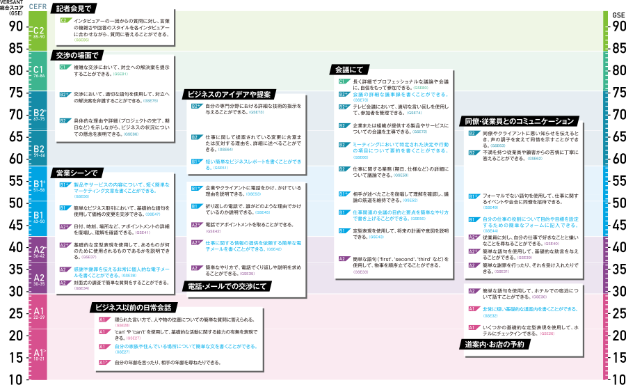
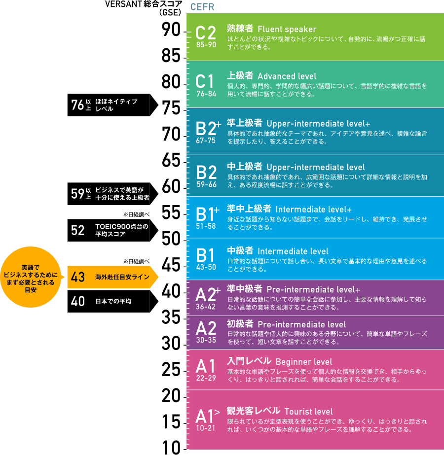

スコアでわかる英語力とは？
｢社員が英語でできること｣を
正確に把握できる
Versantのスコアとは
Versantの総合スコアは10～90点で採点されます。GSE（Global Scale of English）※と相関があり、スコアごとに「英語でできること」を詳細に把握することができます。グローバル人材の採用や選抜、研修のゴール 設定や効果測定に役立ちます。

スコアから分かる
“仕事で使える実践的な英語力“の具体例
-
76点
交渉の場面複雑な交渉において、
対立への解決策を提示できる -
62点
ビジネスのアイデアや
提案において短く簡単なビジネス
レポートが書ける -
50点
営業シーン製品やサービスの
内容について、短く簡単な
マーケティング文章が書ける -
41点
電話・メールでの交渉電話でアポイントメントを取れる
Versantスコアは
国際基準に準拠
GSEの活用法
GSE※ Job Mapping は、職種や職務に応じて必要な英語の Can-do リスト（4 技能別）を紐づけしたものです。 「HRマネージャーに必要な英語力は？」といった、具体的な職務に応じて求められる英語力や、「チームマネジメント」、「ミーティングの進行」など業務に必要なスキルを、GSEスコアで示すことができ、社内の英語力の目標を明確に設定できます。人事採用、配属、社員の育成にご活用ください。
- GSE（グローバル・スケール・オブ・イングリッシュ）とは、ピアソンが設定しているグローバルに比較可能な英語能力の客観的指標。10から90のスコアで英語能力を評価するものです。
- 職務別、業務別に必要な英語力（CanDo）を検索し、抽出できるGSE活用ツールはこちら
GSEを1分動画でわかりやすく解説
CEFRスコアとの相関
- CEFR（ヨーロッパ共通言語参照枠）とは、ヨーロッパ全体で外国語の学習者の習得状況を示す際に用いられるガイドライン。
A1からC2まで7分類されます。テストごとのスコアもCEFRを基準に相関関係を知ることができます。
Versantスコアの見方
スピーキングスコアは、英語の⽂法や表現を正確かつ適切に使う能⼒を反映しています。
発言の内容のほか、英語の発⾳、流暢さ、わかりやすさもスコアに反映されます。
リスニングスコアは、⽇常会話や職場での通常テンポの会話から、具体的な内容や主旨を理解する能⼒を反映しています。
マナーオブスピーチ（はなしぶり）のスコアは、ネイティブの英語話者が聞いた時のわかりやすさを評価します。
⼀般的な発⾳に近いかどうか、通常の会話のテンポで話せるかどうか、を測定しています。